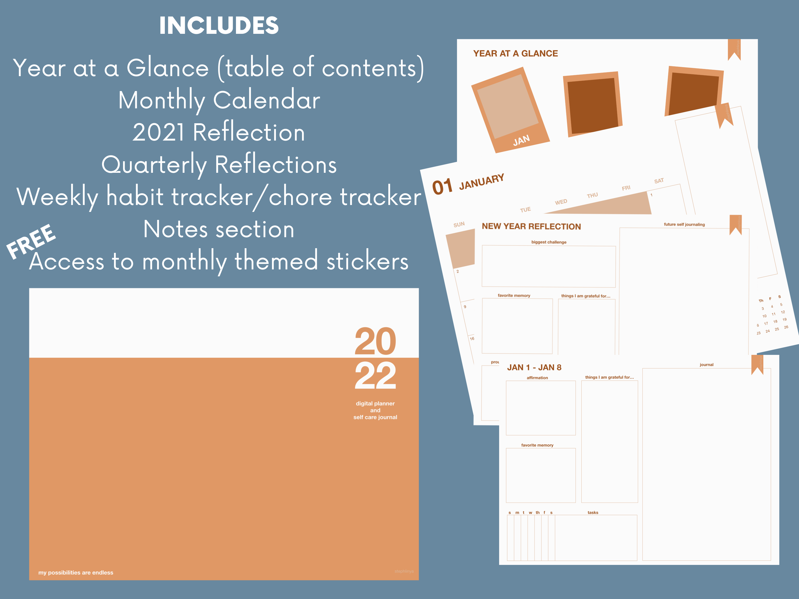

Overview.
Problem
There are a lot of free digital planners out there. However, many are complicated and difficult to navigate with litle room for customization.
Solution
A simple hyperlink planner that is easy to navigate with plenty of opportunities for customization.
Role
I completed this project in about a week’s time. I made the journal, took photos, edited, and posted it on Etsy for sale.
Project status
This project is completed; however, I do update it monthly with themed digital sticker packs for my customers.
Project goals.
Hyperlinked digital planner
Easy to navigate
Customizability
Current status.
